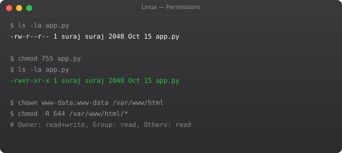

Linux permission system controls who can read, write, and execute every file and directory on the system. Understanding it is essential -- incorrect permissions are a major source of security vulnerabilities and operational problems. Applications fail because they cannot write logs. Web servers cannot serve files. SSH breaks because key files have wrong permissions.
ls -la
# -rw-r--r-- 1 suraj devs 1234 Jan 1 myfile.txt
# drwxr-xr-x 2 root root 4096 Jan 1 scripts/
# |||||||||| ^^^^^ ^^^^
# |||||||||| user group
# |||||||||+-- other: r--
# ||||||+--- group: r-x
# |||+--- user: rw-
# |+-- type: - file, d directory, l symlink
# r=4 w=2 x=1chmod 755 script.sh # rwxr-xr-x
chmod 644 config.txt # rw-r--r--
chmod 600 .ssh/id_rsa # rw------- (SSH key must be this!)
chmod 700 .ssh/ # rwx------
chmod +x deploy.sh # Add execute for all
chmod -w file.txt # Remove write from all
chmod u+x,g-w file # Add user execute, remove group write
chmod -R 755 /app/ # Recursive: all files and directorieschown ubuntu file.txt # Change owner
chown ubuntu:devs file.txt # Change owner and group
chown -R www-data:www-data /var/www/html/ # Recursive
chgrp developers project/ # Change group only# SUID (Set User ID) -- run as owner, not caller
chmod u+s /usr/bin/passwd
ls -l /usr/bin/passwd # -rwsr-xr-x (s = SUID)
# SGID on directory -- new files inherit group
chmod g+s /shared/
# Sticky bit -- only owner can delete
chmod +t /tmp/
ls -la / | grep tmp # drwxrwxrwt (t = sticky bit)
# Numeric: 4=SUID 2=SGID 1=sticky
chmod 4755 file # SUID + 755umask # Show current umask (typically 022)
# umask 022 means:
# Files: 666 - 022 = 644 (rw-r--r--)
# Directories: 777 - 022 = 755 (rwxr-xr-x)
umask 027 # More restrictive: files 640, dirs 750
# Add to ~/.bashrc to make permanent600 for private key files (~/.ssh/id_rsa). 644 for public key files. 700 for ~/.ssh/ directory. 600 for ~/.ssh/authorized_keys. SSH will refuse to connect if private keys are too permissive.
/var/www/html/ should be owned by www-data:www-data (the nginx/apache user). Files: 644, directories: 755. PHP should be owned by the web server user. Never use 777 on a production server.
777 = rwxrwxrwx -- everyone can read, write, and execute. Avoid in production because it lets any user on the system (or any compromised process) modify the file. Use minimal permissions -- only what is needed.
find /home -perm 777 -- find world-writable files. find / -perm -4000 -- find SUID files. find /var/www -not -user www-data -- find files with wrong owner.
Give users and processes only the minimum permissions they need to function. A web server should not be able to write to /etc/. An application user should not have sudo access. This limits damage if a component is compromised.
In Part 4, we cover text processing with grep, awk, and sed -- essential tools for working with log files and configuration in Linux.
← Back to Blog# Web application directory structure
sudo mkdir -p /var/www/myapp/{html,logs,uploads}
# Nginx runs as www-data, app runs as appuser
sudo chown -R www-data:www-data /var/www/myapp/html
sudo chown -R appuser:appuser /var/www/myapp/logs
sudo chown -R appuser:www-data /var/www/myapp/uploads
# Permissions:
# html: 755 (nginx can read, world cannot write)
# logs: 755 (app writes, nginx can read)
# uploads: 2775 (SGID set -- new files inherit group www-data)
find /var/www/myapp/html -type d -exec chmod 755 {} \;
find /var/www/myapp/html -type f -exec chmod 644 {} \;
chmod 2775 /var/www/myapp/uploads# Standard permissions: one owner, one group, everyone else
# ACL: per-user and per-group permissions on any file
# Install ACL tools
sudo apt install acl
# Grant user john read access to a file (even if not in group)
setfacl -m u:john:r /etc/nginx/nginx.conf
# Grant group developers read+write access to directory
setfacl -m g:developers:rw /srv/shared/
# Set default ACL (applies to new files in directory)
setfacl -m d:g:developers:rw /srv/shared/
# View ACL
getfacl /srv/shared/
# Remove ACL
setfacl -x u:john /etc/nginx/nginx.confsudo apt install auditd
# Watch a sensitive file for any access
sudo auditctl -w /etc/passwd -p rwxa -k passwd-access
# Watch a directory for writes
sudo auditctl -w /var/www/html -p w -k web-writes
# View audit log
sudo aureport --file
sudo ausearch -k passwd-access --start today
sudo ausearch -f /etc/passwdumask # Show current (usually 0022)
# umask 022 means:
# Files created: 666 - 022 = 644 (rw-r--r--)
# Directories created: 777 - 022 = 755 (rwxr-xr-x)
# More restrictive for sensitive directories
umask 027
# Files: 640 (rw-r-----) -- owner read+write, group read, others nothing
# Dirs: 750 (rwxr-x---) -- owner full, group read+exec, others nothing
# Set per-user in ~/.bashrc:
echo "umask 027" >> ~/.bashrc
# Set system-wide in /etc/profile or /etc/login.defs:
echo "umask 027" | sudo tee -a /etc/profile# Find world-writable files (security risk)
find /var/www -perm -o+w -type f 2>/dev/null
# Find SUID binaries (can run as owner, not caller)
find / -perm -4000 -type f 2>/dev/null
# Known safe: /usr/bin/passwd, /usr/bin/sudo, /usr/bin/su
# Find SGID files
find / -perm -2000 -type f 2>/dev/null
# Find files not owned by any user (orphaned)
find / -nouser -type f 2>/dev/null
# Find files modified in last 24 hours (incident response)
find /etc -mtime -1 -type f 2>/dev/null
find /usr/bin -mtime -1 -type f 2>/dev/null
# Fix all files in a web directory at once
find /var/www/html -type f -exec chmod 644 {} \;
find /var/www/html -type d -exec chmod 755 {} \;